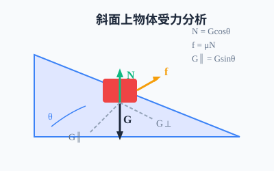
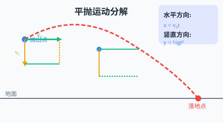
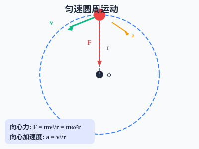

運動與力、能量與動量、曲線運動與萬有引力



調整斜面角度、摩擦力和質量，觀察物體的運動情況！
物體在斜面上運動時，受到重力分力（下滑力）和摩擦力的共同作用。合力 $F = mg\sin\theta - \mu mg\cos\theta$，加速度 $a = \frac{F}{m}$。當合力為負時，物體將靜止或向上運動。
調整初速度和高度，觀察拋體運動的軌跡！
平拋運動可分解為水平方向（勻速直線運動）和豎直方向（自由落體運動）。水平位移 $x = v_0t$，豎直位移 $y = \frac{1}{2}gt^2$。射程 $R = v_0 \times \sqrt{2h/g}$，落地速度 $v = \sqrt{v_0^2 + 2gh}$。
觀察簡諧運動規律，調整參數了解週期與質量的關係！
簡諧運動滿足 $x = A\cos(\omega t + \varphi)$，其中 $\omega = \sqrt{k/m}$。週期 $T = 2\pi\sqrt{m/k}$，頻率 $f = 1/T$。位移最大時速度為零、加速度最大；位移為零時速度最大、加速度為零。
調整兩球質量，觀察彈性碰撞和完全非彈性碰撞！
動量守恆定律：$m_1v_1 + m_2v_2 = m_1v_1' + m_2v_2'$（系統不受外力或合外力為零）。彈性碰撞動能也守恆；完全非彈性碰撞動能不守恆，會有能量損失轉化為內能。
適用於勻變速直線運動的所有情況
初速度為零，僅受重力作用
合外力等於質量與加速度的乘積
水平勻速，豎直自由落體
指向圓心的合外力提供向心力
天體運動的核心公式
功是能量轉化的量度
合外力做功等於動能變化量
只有重力或彈力做功時
衝量等於動量變化量
系統合外力為零時
動量、動能均守恆
一切物體總保持勻速直線運動狀態或靜止狀態，除非有外力迫使它改變這種狀態。揭示了力的本質：力是改變物體運動狀態的原因，而不是維持運動的原因。
物體的加速度跟所受的合外力成正比，跟物體的質量成反比，加速度的方向跟合外力的方向相同。$F=ma$是動力學的核心公式。
兩個物體之間的作用力和反作用力大小相等、方向相反、作用在同一直線上。作用力和反作用力同時產生、同時消失。
在只有重力或彈力做功的物體系統內，動能和勢能可以互相轉化，但機械能的總量保持不變。這是能量守恆定律在力學中的具體體現。
如果系統不受外力或所受合外力為零，系統的總動量保持不變。動量守恆是自然界最普遍、最基本的規律之一。